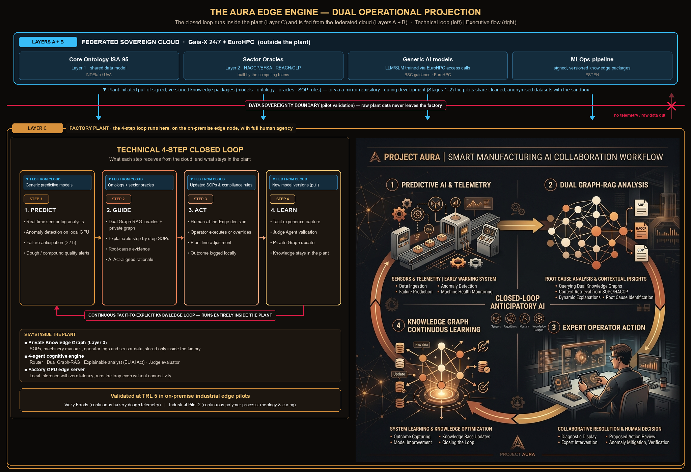

AURA — Master Technical Architecture & Industrial Pilot Concept
A B2B Sovereign Industrial AI Ecosystem based on Dual Architecture (Federated Cloud vs. On-Premise Factory Edge) uniting 11 complementary European entities across RTOs, top-tier research universities, supercomputing centers, and continuous manufacturing testbeds.
The 4 Operational Blocks & Strategic Mutual Alignment
AURA's consortium ecosystem is structured into 4 specialized operational blocks. Beyond direct project funding, each block is driven by distinct non-financial and strategic incentives, creating an aligned consortium focused on pilot success.
🌐 Operational Governance & B2B Commercialization
Global Horizon Europe consortium management, legal direction, competition and open call administration, independent evaluation, and uptake of the winning solutions.
- Research Institute / RTO Confirmed (Norway) — Coordinator WP1 Leader
- Innovation & Acceleration Body Confirmed (Czechia) — Competition & Open Call WP4/WP6 Leader
- Evaluation & Monitoring RTO Confirmed (Lithuania) — Independent Evaluation WP4 Evaluation
• Direct network building with top-performing deep-tech SMEs across Europe.
• Proven European credentials in large-scale cascade innovation governance (€12M FSTP).
🔬 Scientific Engine & Cognitive AI Systems
Domain Knowledge Graphs, ISA-95 core ontologies, Graph-RAG interactive systems, EU AI Act explainability, predictive anomaly models, and agentic workflows.
- University AI & NLP Lab Confirmed (Spain) — NLP & Tech Mentor WP2 Leader
- University Ontologies Institute Confirmed (Netherlands) — Ontologies & Tech Mentor WP2 Tech Mentor
- Technical Research University Confirmed (Germany) — AI Compliance & Tech Mentor WP2 Tech Mentor
- Industrial AI Engineering SME Confirmed — Agentic AI & Integration Mentor WP2/WP3 Tech Mentor
• Empirical validation of Graph-RAG and Multi-Agent frameworks on live production lines.
• High-impact scientific publications and benchmark leadership in applied industrial AI.
☁️ Sovereign Cloud & HPC Supercomputing
Gaia-X-aligned federated testing cloud, continuous MLOps/AIOps pipelines, federated APIs, and EuroHPC / AI Factory access for large-model training, subject to approval.
- Cloud Infrastructure SME Confirmed (Slovakia) — Gaia-X Cloud & Infra Mentor WP3 Leader
- Tier-1 Supercomputing Center Confirmed (Spain) — EuroHPC Center & Infra Mentor WP3 Infra Mentor
• Stress-testing federated computing and data space architectures on heavy manufacturing loads.
• Reusable European deployment blueprints for cloud-to-edge sovereign computing.
🏭 Industrial Testers & TRL 5 Edge Pilots
Real-world plant telemetry validation on Layer C on-premise GPU Edge servers across continuous manufacturing testbeds.
- Continuous Agro-Food Industry Confirmed (Spain) — Pilot Challenge A.1 WP5 Co-Lead
- Continuous Manufacturing Pilot Candidate Pilot (Norway) — Pilot Challenge A.2 WP5 Co-Lead
• Concrete scrap reduction, energy efficiency improvements, and avoided unplanned line downtime.
• Complete technological sovereignty: zero vendor lock-in and zero confidential data leakage to public clouds.
• Priority access and commercial right of first refusal for the winning European AI solutions.
Three-Layer Technical Architecture (Sovereignty & Scalability)
Unified topology linking the Federated Top Level (comprising Layer A EuroHPC supercomputing & Layer B Gaia-X-aligned federated cloud), the Middle Barrier for absolute data sovereignty, and the Local Bottom Level for on-premise industrial edge nodes (Layer C).

The AURA Edge Engine: 4-Step Closed Loop in Factory Plant
Continuous operational conversion of operator tacit experience into explicit Private Knowledge Graph intelligence across plant diagnostic workflows. The loop runs inside the plant and is fed by federated cloud services and knowledge. Data regime: during development (Stages 1–2) the pilots share cleaned, anonymised datasets for training; during pilot validation (Stage 3) raw plant data never leaves the factory.

Consortium Implementation Roadmap (Sequential Execution Blocks)
Three-phase execution aligned with the 3-stage challenge-driven competition required by the topic: preparation and open call, prototyping by 10 teams, and TRL 5 validation of 4 finalists in the pilot plants followed by uptake.
Preparation: Reference Framework, Competition Handbook & Stage 1 Open Call
Focus: Reference ontology, interface contract and benchmarks; competition handbook with challenges, KPIs and evaluation criteria; cleaned and anonymised pilot datasets in the sandbox; Stage 1 open call (M07), pre-screening by Evaluation Lead to up to 20 shortlisted proposals and selection of the top 10 teams by the consortium selection committee.
MS1 (M05): Reference framework v1 • MS2 (M06): Competition handbook, KPI set & sample datasets ready • MS3 (M07): Stage 1 open call launched • MS4 (M12): Top 10 teams contracted; full datasets, sandbox & benchmark v1 ready
Stage 2: Prototyping by 10 SME-led Teams (€300k each)
Focus: The 10 teams build their solutions in the Gaia-X sandbox with the anonymised pilot datasets (TRL 3 → 4), supported technically and commercially by the consortium and monitored by Evaluation Lead. After the benchmark and demo day, the consortium selection committee, with the two pilots holding the largest weight, selects the 4 finalists that go into the plants; their Stage 3 agreements are signed in M23.
Mid-term review (M17) • MS5 (M22): 4 finalists selected
Stage 3: TRL 5 Validation in the Pilot Plants (€2.25M per finalist) & Uptake
Focus: The 4 finalists install their edge nodes and validate the full loop on the production lines with no plant data leaving the site. Grand finale at M34, followed by uptake measures with the user industries.
MS6 (M33): TRL 5 validated • MS7 (M34): Grand finale & best solution identified • MS8 (M35): Partnership or contract offer to the best team & uptake plans • MS9 (M36): Exploitation & sustainability plan
€14M Total Budget: Driving Market Uptake via €12M FSTP
Out of the €14,000,000 total project budget, €12,000,000 is directly allocated to third-party SMEs (FSTP), while the remaining €2,000,000 covers the consortium's core activities. The cascade funding follows the 3-stage challenge-driven competition fixed by the topic. The call is expected to select 3 projects under this topic.
€14.0M
Total Project Budget
€12.0M
FSTP Cascade Funding (SMEs)
€2.0M
Consortium Core Activities
The €12.0M FSTP as a 3-stage competition
FSTP only as grants, to single SMEs or SME-led teams (SME lead + SMEs, research organisations, public bodies or secondary / higher education establishments) from eligible countries. Maximum €2.55M per third party.
Open call & selection
Teams answer one of the two pilot challenges. A pre-screening run by the independent evaluation body shortlists up to 20 proposals above a minimum score; the consortium reviews them and selects the top 10.
Prototyping · 10 teams
10 × €300,000. Prototypes (TRL 3–4) in the sandbox using cleaned, anonymised pilot data. After the benchmark + demo day, the consortium and, above all, the pilots select the top 4.
Grand finale · 4 teams
4 × €2,250,000. Integration and TRL 5 validation in the the industrial pilot plants with no plant data leaving the site, then uptake measures.
Training, mentoring and evaluation are not paid as FSTP: they are carried out by the consortium within its €2.0M (WP4), as the topic requires. the independent evaluation body may use external evaluators, paid from its own budget, for the Stage 1 pre-screening; every funding decision is taken by the consortium.
Solution model: what each team builds
Each team delivers one complete, modular solution for one industrial challenge, built on the common AURA framework. The topic sets the competition; it does not prescribe the technical solution. This model is AURA's proposal, and teams remain free to choose their technologies.
Three different concepts
3 stages
Open call → up to 20 shortlisted → 10 funded teams → 4 finalists and grand finale. The three stages are defined by the topic; the shortlist is AURA's own filter inside Stage 1.
2 challenges
A.1 Bakery (Pilot A.1) and A.2 Coatings (Pilot A.2). Defined by the user industries.
4-step loop
Predict → Guide → Act → Learn. Every solution must cover all four steps.
Rules for the teams
One challenge per team
Each team chooses A.1 or A.2 and develops its solution for that challenge.
One complete solution
Each team delivers all four steps of the loop as one working solution.
Modular inside the team
A single SME can build every module, or an SME-led team can share them.
One responsible lead
The lead SME integrates the modules and answers for the complete solution.
Common framework
All teams must comply with the same interface contract, reference ontology and benchmarks, so results can be compared. The AURA reference designs (T2.3, T2.7) are optional: teams choose their own technology.
Built to be reused
Plant-specific elements are configured separately, so the solution can move to other plants after the project.
Not funded: separate modules from different teams for the consortium to integrate later. Teams compete with complete solutions, as the topic identifies the best-performing solution.
What each team delivers per stage
Chosen challenge, architecture covering the four steps, and allocation of modules within the team.
Complete prototype in the sandbox, using anonymised data, tested against the benchmarks and the interface contract.
Integrated solution validated on the production line of its challenge, with operators, up to TRL 5.
Example: how Challenge A.1 follows the 4-step loop
Anticipates a quality anomaly or a failure on the bakery line.
Recommends what to do and cites the official procedures.
The operator applies, changes or rejects the recommendation.
The validated experience is added to the plant's private knowledge graph.
Example challenges for the open call (illustrative)
Each pilot publishes one challenge. These examples show the kind of industrial problem a team would solve inside it, always covering the full Predict → Guide → Act → Learn loop.
A.1 Bakery · Pilot A.1
A.1.a · Baking-quality drift
- Problem
- Oven or proofing deviations produce under- or over-baked batches that are only detected at end-of-line inspection.
- Solution
- Predicts the drift before it happens, guides the operator to the right procedure, records what was done.
- Data
- Oven and proofing temperature and humidity, line speed, end-of-line weight and colour checks.
- Target
- Anomaly lead time ≥ 2 h · scrap −15%.
A.1.b · Unplanned stops in mixers, dividers and conveyors
- Problem
- Wear and jams cause unplanned stops; the know-how to fix them sits with a few experienced technicians.
- Solution
- Detects early wear signals, recommends the action from manuals and past repairs, learns from each intervention.
- Data
- Motor current and vibration, stop logs, maintenance records, equipment manuals.
- Target
- Fewer unplanned stops (baseline and target fixed in T5.1).
A.1.c · Product weight and shape drift
- Problem
- Weight, shape or colour drift with flour batch or dough conditions, and the response varies between shifts.
- Solution
- Flags the drift, suggests the adjustment citing the source procedure, captures the operator's feedback.
- Data
- Checkweigher, vision inspection, raw-material batch records, SOPs.
- Target
- Precision > 85% · 100% of recommendations traceable to source.
A.2 Coatings · Pilot A.2 (eligibility to be confirmed with the EC)
A.2.a · Rheology deviation in batches
- Problem
- Off-spec viscosity is found late, in lab quality control, and the batch needs rework.
- Solution
- Detects the deviation in real time and suggests a correction within the approved formulation limits; the operator decides.
- Data
- Inline and lab viscosity, formulation, temperature, mixing times.
- Target
- Real-time rheology deviation detection.
A.2.b · Surface defects after curing
- Problem
- Pinholes, bubbles or colour shifts appear after curing and lead to rejected parts.
- Solution
- Anticipates the defect from batch and curing-oven data and recommends the preventive action.
- Data
- Curing-oven zone temperatures, batch records, defect inspection results.
- Target
- Surface-defect rejects −20%.
A.2.c · Energy-aware curing profiles
- Problem
- Curing ovens run conservative profiles that use more energy than the coating needs.
- Solution
- Recommends profile adjustments that keep quality, and learns which settings work for each product.
- Data
- Oven zone temperatures, energy meters, quality-control results.
- Target
- Oven energy −12% at equal quality.
Data sources and targets are to be confirmed with the industrial pilot. The final problem statements are fixed in T5.1 and published with the Stage 1 call.
Stage targets & KPIs (proposed; baselines fixed in T5.1)
| Challenge | Quantitative KPIs | Stage 2 (sandbox) | Stage 3 (plant) |
|---|---|---|---|
| A.1 Bakery (Pilot A.1) | Anomaly lead time ≥ 2 h · precision > 85% · 100% of recommendations traceable to source · scrap −15% | Lead time, precision and traceability on benchmarks | All KPIs measured on the line |
| A.2 Coatings (Pilot A.2, not eligible as listed; to be confirmed with the EC) | Real-time rheology deviation detection · surface-defect rejects −20% · oven energy −12% | Detection and traceability on benchmarks | All KPIs measured on the line |
| Both (qualitative & HITL) | Operator acceptance · time-to-resolution · override rate | Interface-contract conformance and AI Act requirements | Measured under the T2.6 protocol |
Evaluation criteria per stage (proposed)
| Stage | Criteria and weights |
|---|---|
| Stage 1 → top 10 | Technical excellence and fit to the challenge 35% · coverage of the 4 steps and interface contract 25% · team capacity 20% · impact and exploitation 20%. Applied twice: by the the independent evaluation body pre-screening (all eligible proposals → up to 20 shortlisted, all above the minimum threshold) and by the consortium selection committee (shortlist → top 10). |
| Stage 2 → top 4 | Technical KPIs in the sandbox 35% (automatic benchmark) · interface contract and AI Act 20% · monitoring report 15% · plant fit and deployment plan 30%, scored jointly by the two pilots for all 10 teams |
| Stage 3 → best solution | Plant KPIs 40% · operator acceptance (HITL) 20% · explainability and compliance 20% · exploitation plan, reusability and industry agreements 20% |
Selection uses a single ranking per stage, as the topic requires; in Stage 1 the pre-screening ranking fixes the shortlist and the committee ranking fixes the top 10. Shortlist rule: only proposals above a minimum threshold are shortlisted (proposed: 60% of the total score and a minimum per criterion, fixed in the competition handbook); the 20 best-ranked of them pass, proposals tied in 20th place all pass, and if 20 or fewer eligible proposals are received there is no pre-screening beyond the threshold check. Independence: two independent external experts sit in the selection committee with a vote at every funding decision. Plant criterion: the two pilots score the Stage 2 plant fit of all 10 teams together, not each one only the teams of its own challenge, with the same scoring grid and in a consensus session chaired by the independent evaluation body, so the ranking stays comparable across challenges. At every stage each team is scored on its attainment of its own challenge targets, relative to the T5.1 baselines, so solutions from both challenges compete on equal terms; in the grand finale the highest overall score is the best-performing solution. Each pilot commits in writing to host up to four finalists (T5.3), so the ranking never depends on plant capacity. If all four finalists come from the same challenge, one or two of them also replicate their solution in the other plant as a reusability test, so both plants validate. Whether a published rule of at least one finalist per challenge, above the threshold, is compatible with the topic is to be confirmed with the European Commission.
FSTP payment schedule (proposed)
| Stage | Instalment | Trigger | Month | Share | Per team | Total |
|---|---|---|---|---|---|---|
| Stage 2 | Pre-financing | FSTP agreement signed | M12 | 40% | €120,000 | €1.2M |
| Stage 2 | Final payment | Deliverables accepted after the Stage 2 evaluation | M22 | 60% | €180,000 | €1.8M |
| Stage 3 | Pre-financing | FSTP agreement signed | M23 | 30% | €675,000 | €2.7M |
| Stage 3 | Interim payment | Mid-term review passed | M29 | 40% | €900,000 | €3.6M |
| Stage 3 | Final payment | Final deliverables accepted after the grand finale | M34–M35 | 30% | €675,000 | €2.7M |
| Total | €12.0M | |||||
The consortium coordinator, holds the €12.0M FSTP budget in addition to its share of the €2.0M core budget, signs the FSTP agreements and pays the teams (T1.2, T4.5). Payments depend on accepted deliverables and the independent evaluation body's monitoring reports, not on the final ranking. Instalments may be reduced or withheld if the agreed targets are not met.
Expected Outcomes & Draft Exploitation Plan
How AURA contributes to the three expected outcomes of the topic in the advanced manufacturing sector, and how the teams' solutions will be taken up. Expected results are pre-competitive. The call is expected to select 3 projects under this topic.